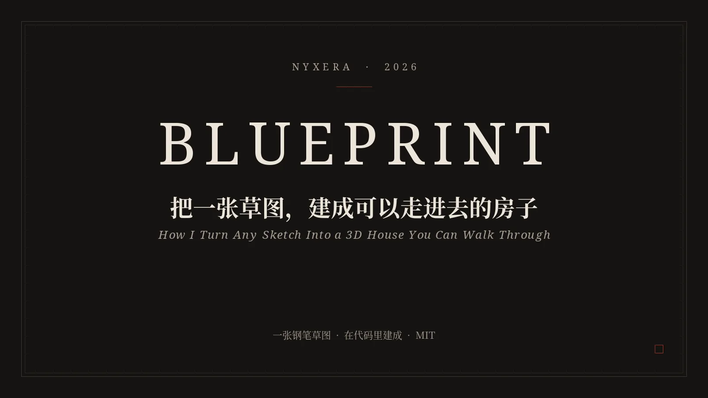

Nyxera 把一张 14 米见方的钢笔草图交给 Claude Code。按他的说法，它没有再去生成一张「并不存在的房子」的效果图，而是像木匠那样，在 Blender 里用代码把地梁、柱、梁、椽、每一块地板、每一张榻榻米、每一根障子细棂都建成单独的物体，一共 2,444 个零件，然后在图纸上把房子搭起来，再带他走进去。同一套管线后来又用在一栋悬崖别墅和一套公寓上。技能仓库 Nyxera0x/blueprint 以 MIT 许可发布。文中零件数、机型与耗时等均为原文自报；成片见原文。

这是什么
Blueprint 是 Nyxera 做的一份 Claude Code 技能：你交给它一张草图、一张平面图，或几张外观参考，它先把尺寸读成以米计的数字，再把整栋房子写成一份 Blender 脚本。仓库说明里写，房子没有现成的 3D 文件，场景就是 Claude 写出来、渲染、对照、再修改的 Python 脚本。技能里带了三栋房子：14 米见方、院中有红枫的庭院住宅（来自钢笔草图），岬角上带无边泳池的悬崖别墅（来自四张参考图），以及一套按售楼书平面图描出来的三居室公寓。
作者在长文里把方法写成十步：先读数字，再钉死外观，然后像木匠那样逐件建造，对着参考图改到没有差异，选光线，把「在输入上把自己建成」的过程拍成片子，再让它在 8 GB 显卡上跑得动，最后按时间轴配上声音。以下零件数量、所用模型、显卡和耗时，均为原文自报。
安装
仓库给出的安装命令是：
npx skills add Nyxera0x/blueprint -g -a claude-code还需要 Blender 4.2 或更新、带 pillow 的 Python 3（读平面图时还要 opencv-python 和 numpy），以及 ffmpeg。每栋房子的 CC0 材质只需拉取一次，例如：
python ~/.claude/skills/blueprint/houses/courtyard/fetch_assets.py然后在 Claude Code 里输入 /blueprint，并交出你的草图、平面或参考图。材料与植物来自 Poly Haven，以 CC0 提供。
许可
仓库 Nyxera0x/blueprint 以 MIT 许可发布，版权页写明 Copyright (c) 2026 Nyxera0x 与 Copyright (c) 2026 whaleyxbt。README 写明：代码为 MIT；材质、植物和石块来自 Poly Haven，CC0；音效工具包在代码里生成声音，少数录音样本的 CC0 来源列在 sfx/samples/SOURCES.md。技能说明还写：仓库里的图像只放作者拥有或 CC0 的内容，售楼书平面图留在把它带来的那个人手里。
相关阅读
- teardown：把任何机器变成一台可以拆开的 3D 模拟器——同样是 Claude Code 技能配作者长文，题目也是「How I Turn Any…」这一句式。
- Open House：把一张手绘等轴图，变成会立起来的弹出卡片——另一条把房子做成 3D 的路子，不是同一个项目。
- Anatomy：说出一个想法，Claude 把它造成一台会动的机器——同属用代码把想法建成可看的 3D 物。
长文全文中译
《How I Turn Any Sketch Into a 3D House You Can Walk Through》 · 作者 Nyxera（@Nyxera0x）
我交给 Claude Code 一张钢笔草图。它在图纸上用 2,444 个零件把房子建了起来，每一块木板、每一张榻榻米、每一根障子细棂都是单独的物体，然后带我走了进去。下面是这份免费技能、全部提示词，以及一路修过的问题。
我试过的每一种 AI 渲染，都只是给一栋并不存在的房子画一张漂亮的图。你让它把一面墙挪一下，得到的是另一栋房子。
所以我不再要图。我让 Claude Code 像木匠那样盖房子：地梁、柱子、梁、椽，每一块地板，每一张榻榻米，每一扇障子里的每一根细木条。在 Blender 里，用代码完成。
输入是一张钢笔草图：14 米见方，院子中央有一棵枫树。Claude 从图上读出尺寸，造出 2,444 个零件，并把它们落在纸上的过程拍成了片子。
接着我又用另外两种输入，做了另外两栋房子。
文末有一份免费的 Claude Code 技能，三栋房子都在里面，下面的提示词也全部收录。
你要做的是什么
每栋房子一份 Blender 脚本，再从中做出一部片子。一共 6 部分：
- 数字。把输入读成房间、墙体、洞口和家具，单位是米。
- 外观。3 到 4 张参考图，把材料、光线和家具定下来。
- 房子。每个零件都是单独的物体，并标上它所在的阶段：基础、构架、地板、墙体、障子、室内、屋顶、庭院。
- 静帧。对着参考图渲染，直到再没有差异。
- 片子。从输入本身打开，在它上面把房子建起来，让它活过来，再走进去。
- 声音。每个落下的零件都有一声，音乐剪到高潮正好落在揭示的那一刻。
你需要什么
- 任何包含 Claude Code 的方案。我全部是在 Opus 5.5 上跑的。
- Blender 4.2 或更新。免费。我用的是 5.2。
- 有独显会更顺利。我的是一块 8 GB 的 RTX 2060 SUPER，第 9 步讲它怎么装得下。
- Python 3 和 ffmpeg。如果你开口，Claude Code 会帮你装好。
- 可选：ElevenLabs 的密钥，用来配乐。没有的话就只剩音效。
第 1 步 安装技能
npx skills add Nyxera0x/blueprint -g -a claude-code然后把免费材质拉取一次：
python ~/.claude/skills/blueprint/houses/courtyard/fetch_assets.py打开 Claude Code，输入 /blueprint。
第 2 步 准备输入
如果你已经有草图、平面图，或它们的照片，这一步可以跳过。我当时没有，所以草图是用图像模型做的：
/blueprint Write me an image prompt for [a hand-drawn floor plan of a single-storey Japanese courtyard house, 14 x 14 m, a 7 x 7 m courtyard with a maple]. Black pen on off-white paper, shot straight down on a desk. Dimension lines with numbers, room labels in English capitals, sliding doors drawn on the courtyard side. Sparse, like an architect's quick sketch.你自己在餐巾纸上拍一张，用法也一样。
〔图见原文：钢笔平面草图〕
第 3 步 先读成数字
/blueprint Read this plan into numbers before you build anything: [the sketch].
1. Find the scale. Trust the dimension labels over the pixels.
2. List every room with its corners in metres, every wall with its thickness, every door and window with its width and height.
3. List the furniture the drawing shows and where it stands.
4. Tell me what doesn't add up.那张图并不正方。图像模型把同一段 14 米画成了宽 745 像素、高 670 像素。Claude 按标注来，建成了真正的 14 米见方。
公寓那栋，它按比例尺上的 86 像素等于 1 米，描出平面图灰色填充的墙线。门是在一米网格上手动读的。自动识别曾把门画到房间正中间。
第 4 步 钉死外观
Write 3 image prompts for the finished house, one per view I'll render: [high over one corner], [inside the tatami room looking out at the maple], [along the veranda after rain]. The same materials in all 3: [charred cedar, pale plaster, a dark standing-seam roof, tatami, washi, wet stone, a red maple on moss].我生成了这 3 张图，再交回去。从这一步起，每一块材料、每一盏灯、每一个靠垫，都由它们决定。
〔图见原文：三张外观参考〕
第 5 步 像木匠那样盖
Build the house in Blender as one Python script. Every part is its own object: [footings, sills, joists, posts, plates, tie beams, rafters, roof strips, cladding boards, floor boards, tatami mats with their black edging, shoji frames with every kumiko strip, glass doors, furniture, garden stones].
Tag every part with its stage so a film can fly them in by stage and count them.
Use free CC0 materials and plants from Poly Haven.
Build the 4 wings with one function: address each by its side and (u, v), so the roof's hips and valleys fall on the diagonals.每一张榻榻米都是一个按自己方向旋转的盒子，织纹也跟着转。每一扇障子都是框架、一张和纸，再加 8 根组子细棂。屋顶是四翼，一个函数。
第 6 步 对着参考图渲染
Render each view at 960x540 and 32 samples. Put the reference next to it and list what differs: proportions, materials, light, what's missing, what pokes through. Fix the list and render again. Stop when the list is empty.改了 6 轮草稿。出现过这些问题：
- 光线曲线。AgX 把别墅的夕阳调成了米色。Khronos PBR Neutral 把橘色留住了。
- 视线。榻榻米房间的开口正中立着 3 根柱子。Claude 把它们拿掉，改用一根跨度 5.4 米的梁。
- 悬崖。崖壁上的石头从别墅泳池的池底透了出来。
- 屋顶。系梁从金属屋面穿出 5 厘米，从上往下看是一个个小点。
〔图见原文：参考图与渲染对照〕
第 7 步 选定光线
我的第一版是蓝调时刻，跟参考图一样。结果显得阴沉。一个开关就能改掉整场：
Add a --look flag. [dusk] keeps the references' blue hour. [day] is a bright day after rain: a pale sky with clouds, a low sun from the south-east, wet boards, the room lights at half. Render both from the same camera.〔图见原文：黄昏与雨后白日的同一机位〕
第 8 步 拍下它把自己建成
Open the film on the input: [the sketch] as a plane on the desk, mapped so its plan is the real 14 x 14 m, seen straight down through a 200 mm lens so the first frame is the photo.
- the camera spirals down while the lens shortens: the plan keeps its size and the perspective opens
- the parts fly in by stage onto the paper in white clay, each stage flashing its own colour as it lands: [foundation, frame, floors, walls, shoji, interior, roof, garden]
- a counter in the corner counts every part
- then a wave runs out from [the maple]: paper to hillside, clay to real materials, the sky to [day], the lights on
- a slow hold, a dive over the roof into the court, in through the open glass, then turn round to the garden and pull back to the seat
Never face a blank wall up close. Write timeline.json with every landing.第一版走进榻榻米房间时正对着后墙。有半秒钟，整幅画面都是灰泥。现在镜头在开口处转身，再退回房间里。
〔成片见原文：庭院住宅在图纸上组装，再走进去〕
第 9 步 让 8 GB 显卡装得下
加上运动模糊后，第一帧就挂了：显存不够。
Find what eats the memory. List the meshes by polygon count and the textures by size, then fix the biggest ones for the film only.场景里有 3,200 万多边形，其中 3,000 万在 9 棵来自 Poly Haven 的针叶树上。Claude 为片子把它们减面了 8 次，静帧仍用完整的树。倒角让 Cycles 把每一个飞入的零件都当成变形网格，还要在每一个模糊步上存下全部顶点，于是它在打关键帧之前先把倒角烘焙进网格。峰值降到了 5.5 GB。
在桌子上方，一帧要 3.5 秒。到了房子里面，是 20 到 50 秒，采样数为 64。
第 10 步 配乐
Score it from timeline.json: [stone knocks for the footings, hollow wood for the posts and beams, paper for every sheet of washi, thin metal for each roof strip, a rustle as the maple grows, rain arriving with the wave]. Get a music track from ElevenLabs with its sections cut to the film's beats, find its swell and offset it onto the wave. Master to -14 LUFS.24 秒里有 1,335 个声音。音轨的高潮出现在 14.0 秒，那一阵「波」从 13.4 秒开始，所以音乐从 0.65 秒处起。
附 换一栋房子
/blueprint Same pipeline for [this floor plan from a sales brochure]. Trace the walls from the plan's fill at its scale bar, read the doors and windows on a metre grid, build the furniture from the plan's symbols. The film: a dollhouse view, then walk through [the living room to the kitchen].〔成片见原文：悬崖别墅与公寓〕
全部内容都在这份技能里，免费且开源：
- 三栋房子的全部代码，从草图、参考图和平面，一直到完成的片子。
- 每一栋的拆解：它是怎么被读入、建造、打光和拍摄的，中途又在哪里出过错。
- 片子和声音的管线：在输入上建造、那一阵「波」、潜入室内、按片子的时钟配乐。
- 用在你自己房子上的方法：交出草图、平面或 3 张图，输入
/blueprint。
英文原文
How I Turn Any Sketch Into a 3D House You Can Walk Through · Nyxera (@Nyxera0x)
I gave Claude Code a pen sketch. It built the house on top of the drawing from 2,444 parts, every board, tatami mat and shoji strip its own object, then walked me inside. Below: the free skill, every prompt and every fix.
Every AI render I tried gave me a pretty picture of a house that doesn't exist. Ask for one wall to move and you get a different house.
So I stopped asking for pictures. I asked Claude Code to build the house the way a carpenter would: footings, posts, beams, rafters, every floor board, every tatami mat, every strip of wood in every shoji. In Blender, as code.
The input was a pen sketch: 14 by 14 metres, a courtyard with a maple in the middle. Claude read the numbers off it, built 2,444 parts and filmed them landing on the paper.
Then I ran it on 2 more houses with 2 other kinds of input.
At the end there's a free Claude Code skill with all 3 houses inside, and every prompt is below.
What You're Building
One Blender script per house and a film made from it. 6 parts:
- The numbers. The input read into rooms, walls, openings and furniture, in metres.
- The look. 3 or 4 reference images that fix the materials, the light and the furniture.
- The house. Every part a separate object, tagged with its stage: foundation, frame, floors, walls, shoji, interior, roof, garden.
- The stills. Rendered next to the references until nothing differs.
- The film. It opens on the input itself, builds the house on top of it, brings it to life and walks inside.
- The sound. A sound on every part that lands, and music cut so its swell hits the reveal.
What You Need
- Claude Code on any plan that includes it. I ran everything on Opus 5.5.
- Blender 4.2 or newer. Free. I used 5.2.
- A graphics card helps. Mine is an RTX 2060 SUPER with 8 GB, and Step 9 is how it fits.
- Python 3 and ffmpeg. Claude Code installs both if you ask.
- Optional: an ElevenLabs key for the music. Without it you get the sound effects alone.
Step 1. Install the Skill
npx skills add Nyxera0x/blueprint -g -a claude-codeThen fetch the free materials once:
python ~/.claude/skills/blueprint/houses/courtyard/fetch_assets.pyOpen Claude Code and type /blueprint.
Step 2. Get the Input
If you have a sketch, a plan or a photo of one, skip this. I didn't, so the sketch came from an image model:
/blueprint Write me an image prompt for [a hand-drawn floor plan of a single-storey Japanese courtyard house, 14 x 14 m, a 7 x 7 m courtyard with a maple]. Black pen on off-white paper, shot straight down on a desk. Dimension lines with numbers, room labels in English capitals, sliding doors drawn on the courtyard side. Sparse, like an architect's quick sketch.A photo of your own napkin works the same way.
Step 3. Read It Into Numbers
/blueprint Read this plan into numbers before you build anything: [the sketch].
1. Find the scale. Trust the dimension labels over the pixels.
2. List every room with its corners in metres, every wall with its thickness, every door and window with its width and height.
3. List the furniture the drawing shows and where it stands.
4. Tell me what doesn't add up.The drawing wasn't square. The image model drew the same 14 metres 745 pixels wide and 670 pixels tall. Claude went with the labels and built a true 14 by 14.
For the apartment it traced the walls off the plan's grey fill, at 86 pixels to a metre from the scale bar. The doors it read by hand on a metre grid. The automatic pass had put doors across the middle of rooms.
Step 4. Pin the Look
Write 3 image prompts for the finished house, one per view I'll render: [high over one corner], [inside the tatami room looking out at the maple], [along the veranda after rain]. The same materials in all 3: [charred cedar, pale plaster, a dark standing-seam roof, tatami, washi, wet stone, a red maple on moss].I generated the 3 images and gave them back. From here on they decide every material, every lamp and every cushion.
Step 5. Build It Like a Carpenter
Build the house in Blender as one Python script. Every part is its own object: [footings, sills, joists, posts, plates, tie beams, rafters, roof strips, cladding boards, floor boards, tatami mats with their black edging, shoji frames with every kumiko strip, glass doors, furniture, garden stones].
Tag every part with its stage so a film can fly them in by stage and count them.
Use free CC0 materials and plants from Poly Haven.
Build the 4 wings with one function: address each by its side and (u, v), so the roof's hips and valleys fall on the diagonals.Every tatami mat is a box turned to its own direction, so the weave turns with it. Every shoji is a frame, a sheet of washi and 8 kumiko strips. The roof is 4 wings, one function.
Step 6. Render It Next to the References
Render each view at 960x540 and 32 samples. Put the reference next to it and list what differs: proportions, materials, light, what's missing, what pokes through. Fix the list and render again. Stop when the list is empty.6 rounds of drafts. What came up:
- The light curve. AgX turned the villa's sunset beige. Khronos PBR Neutral kept the orange.
- The view. 3 posts stood in the middle of the tatami room's opening. Claude took them out and let one beam span 5.4 m.
- The cliff. Rocks from the cliff face showed through the bottom of the villa's pool.
- The roof. Tie beams poked 5 cm through the metal and showed as dots from above.
Step 7. Pick the Light
My first version was blue hour, like the references. It came out gloomy. One flag switches the whole scene:
Add a --look flag. [dusk] keeps the references' blue hour. [day] is a bright day after rain: a pale sky with clouds, a low sun from the south-east, wet boards, the room lights at half. Render both from the same camera.Step 8. Film It Building Itself
Open the film on the input: [the sketch] as a plane on the desk, mapped so its plan is the real 14 x 14 m, seen straight down through a 200 mm lens so the first frame is the photo.
- the camera spirals down while the lens shortens: the plan keeps its size and the perspective opens
- the parts fly in by stage onto the paper in white clay, each stage flashing its own colour as it lands: [foundation, frame, floors, walls, shoji, interior, roof, garden]
- a counter in the corner counts every part
- then a wave runs out from [the maple]: paper to hillside, clay to real materials, the sky to [day], the lights on
- a slow hold, a dive over the roof into the court, in through the open glass, then turn round to the garden and pull back to the seat
Never face a blank wall up close. Write timeline.json with every landing.The first cut walked into the tatami room facing the back wall. For half a second the whole screen was plaster. Now the camera turns round in the opening and backs into the room.
Step 9. Make It Fit an 8 GB Card
The first frame with motion blur died: out of GPU memory.
Find what eats the memory. List the meshes by polygon count and the textures by size, then fix the biggest ones for the film only.32 million polygons in the scene, 30 million of them in 9 conifers from Poly Haven. Claude decimated them 8 times for the film and kept the full trees for the stills. The bevels made Cycles treat every flying part as a deforming mesh and store every vertex per blur step, so it baked them into the meshes before keying anything. The peak fell to 5.5 GB.
Over the desk a frame takes 3.5 seconds. Inside the house, 20 to 50, at 64 samples.
Step 10. Score It
Score it from timeline.json: [stone knocks for the footings, hollow wood for the posts and beams, paper for every sheet of washi, thin metal for each roof strip, a rustle as the maple grows, rain arriving with the wave]. Get a music track from ElevenLabs with its sections cut to the film's beats, find its swell and offset it onto the wave. Master to -14 LUFS.1,335 sounds in 24 seconds. The track's swell came out at 14.0 seconds and the wave starts at 13.4, so the music starts 0.65 seconds in.
Bonus. Swap the House
/blueprint Same pipeline for [this floor plan from a sales brochure]. Trace the walls from the plan's fill at its scale bar, read the doors and windows on a metre grid, build the furniture from the plan's symbols. The film: a dollhouse view, then walk through [the living room to the kitchen].Everything ships inside the skill, free and open source:
- The 3 houses with every line of code, from the sketch, the references and the plan to the finished film.
- A breakdown of each one: how it was read, built, lit and filmed, and what broke on the way.
- The film and sound pipeline: the build on the input, the wave, the dive inside, the score on the film's clock.
- The method for your own house: hand it a sketch, a plan or 3 images and type /blueprint.
附录 A：README 中译
Nyxera0x/blueprint 仓库 README（MIT）
blueprint
一张钢笔草图、一张平面图，或三张参考图进去，一栋会自己建起来的 3D 房子出来。
一份 Claude Code 技能。每一块木板、每一张榻榻米、每一根障子细棂、每一帧，都是代码，在 Blender 里渲染。
技能里有 3 栋房子 · 仅庭院住宅就有 2,444 个零件 · 没有这些房子的 3D 文件 · CC0 材质
它做出什么
你把手头的东西交给 Claude：纸上的草图、售楼书上的平面，或几张你想要的外观图。Claude 先把它读成数字（墙、房间、洞口、比例），把整栋房子写成一份 Blender 脚本，每个零件都是单独的物体，对着你的参考图渲染静帧并修正差异。然后它把房子在输入之上建起来的过程拍成片子，让它活过来，再走进去；每个落下的零件都有一声。
- 庭院住宅 · 来自钢笔草图。14 × 14 米，7 × 7 米的院子里有一棵红枫。构架、地板、墙、障子和屋顶以白黏土落在纸上，每个系统一种颜色，带计数器。
- 悬崖别墅 · 来自 4 张参考图。岬角上的洞石亭榭，悬崖外挑的无边泳池。砖块飞入，池水注满，灯亮起来，从玻璃潜入。
- 公寓 · 来自售楼书平面图。按比例尺描墙，在一米网格上读门和家具。先是娃娃屋视角，再走进房间。
它怎么工作
- 先有数字。输入先变成以米计的房间、墙、洞口和家具。草图上的尺寸标注优先于像素。
- 像木匠那样建。地梁、垫木、柱、梁、椽、屋面板、外墙板、地板、榻榻米、组子：各是各的物体，标上阶段。
- 静帧对照参考。低分辨率渲染，把参考图放在旁边，列出差异，修正，再渲。
- 片子从输入打开。第一帧就是那张草图。镜头一边螺旋下降，零件一边落在纸上。
- 8 GB 显卡也能跑。运动模糊前先把倒角烘焙进网格，扫描来的针叶树减面 8 倍。
安装
npx skills add Nyxera0x/blueprint -g -a claude-code你还需要 Blender 4.2 或更新、带 pillow 的 Python 3（读平面图时还要 opencv-python 和 numpy），以及 ffmpeg。每栋房子的 CC0 材质只需拉取一次：
python ~/.claude/skills/blueprint/houses/courtyard/fetch_assets.py然后打开 Claude Code，用你的草图、平面或参考图输入 /blueprint。
自己跑一个例子
blender -b --factory-startup -P houses/courtyard/build.py -- tatami engawa --samples 192 --res 1920x1080
blender -b --factory-startup -P houses/courtyard/film.py -- --res 1920x1080 --samples 64静帧和帧文件会落到 blueprint-out/。片子的声音、计数器叠层，以及为新房子使用这套方法，见 SKILL.md。
致谢
材质、植物和石块：Poly Haven，CC0。音效工具包在代码里生成全部声音；少数录音样本及其 CC0 来源列在 sfx/samples/SOURCES.md。代码：MIT。
附录 B：SKILL.md 中译
Nyxera0x/blueprint/SKILL.md（MIT）
一份输入，一份用代码写成的 Blender 场景，一组静帧，一部片子。没有手工建模，也不存在这栋房子的 3D 文件：场景就是 Claude 写出来、渲染、审看再修改的 Python 脚本。
SKILL_DIR 是本文件所在的文件夹。渲染输出到 $BLUEPRINT_OUT（默认 ./blueprint-out）。
你需要什么
- Blender 4.2 或更新，在 PATH 上名为
blender（在 5.2 上用 Cycles、NVIDIA GPU 测过；任意 OptiX 或 CUDA 卡都可以，按「让显卡装得下」里的步骤，8 GB 就够）。 - Python 3，需有
pillow（计数器叠层）；若要读平面图，还要opencv-python和numpy。 - ffmpeg 在 PATH 上（或设置
FFMPEG=/path/to/ffmpeg）。 - 可选：
ELEVENLABS_API_KEY，用来配乐。没有的话，tools/music.py只混合动作音效。
第一次运行
材质和植物是来自 Poly Haven 的 CC0。每栋房子把自己的资源拉到 $BLUEPRINT_ASSETS（默认 ~/.blueprint/polyhaven），已经有的会跳过：
python "$SKILL_DIR/houses/courtyard/fetch_assets.py"技能里的三栋房子
- 庭院住宅：输入是纸上的钢笔草图（
sketch.png），目录houses/courtyard/。14 × 14 米，7 × 7 米的院子里有一棵红枫，有榻榻米房间、缘侧、环形直立锁边屋顶。片子从草图打开，用白黏土在纸上装上 2,444 个零件，每个系统闪一下自己的颜色并带计数器，然后从枫树荡出一阵「波」，把纸变成山坡，把黏土变成杉木、和纸和石头。 - 悬崖别墅：输入是 4 张参考图，目录
houses/villa/。日落时分岬角上的洞石亭榭，悬崖外挑的无边泳池。片子从海面上驶入，用砖块把别墅建起来，注满泳池，点亮灯光，再从打开的玻璃潜入。 - 公寓：输入是售楼书上的平面图，目录
houses/apartment/。一套三居室，按比例尺描出平面填充的墙线，在一米网格上读门和家具。先是娃娃屋视角，再走进去。
每栋房子都有 build.py（场景、静帧）、film.py（片子）、score.py（按片子时间轴放下动作音效）和 music_plan.json（一份 ElevenLabs 作曲方案）。做新房子时，复制最接近的一栋。
blender -b --factory-startup -P houses/courtyard/build.py -- tatami engawa corner --samples 192 --res 1920x1080
blender -b --factory-startup -P houses/courtyard/film.py -- --res 1920x1080 --samples 64
python houses/courtyard/hud.py --frames blueprint-out/courtyard/film --out blueprint-out/courtyard/silent.mp4
python tools/music.py --film blueprint-out/courtyard/silent.mp4 --score houses/courtyard/score.py --plan houses/courtyard/music_plan.json --out blueprint-out/courtyard/final.mp4film.py 可续跑：磁盘上已有的帧会跳过，渲染中断后可以从停下的地方接着做（先删掉空的占位文件）。--stills 0,6,13 用来单渲几个时刻做检查，--step 3 --res 480x270 --samples 6 用来快速预览整部片子。
建一栋新房子
- 先把输入读成数字，不要读成一种气氛。草图：尺寸标注优先于像素（图像模型会把 14 米的正方形画成宽 745 像素、高 670 像素）。平面图：找到比例尺，描出墙的填充，并在一米网格上手动读门窗（
grid_view.py）；自动检测洞口常常把门画到房间中间。在做任何几何之前，先把房间、墙、洞口和家具写成数字。 - 用 3 到 4 张参考图钉死外观。为你将要渲染的视角写图像模型提示词（一个高处视角、一个房间、一个细部），让使用者生成它们。材料、光线和家具由这些图决定。
- 像木匠那样盖。地梁、垫木、搁栅、柱、承梁板、系梁、椽、屋面板、外墙板、地板，每一张带包边的榻榻米，每一扇带全部组子细棂的障子，玻璃、家具、庭院。每一个都是单独的物体，标上阶段（
K.STAGE[0] = "frame"）：片子按阶段把它们飞进去，计数器负责计数。重复的翼用边和 (u, v) 坐标来寻址，这样一个函数就能建出全部四翼，屋顶的戗脊和天沟会落在对角线上。 - 对着参考图渲静帧，修正差异。先用低分辨率（960×540，32 次采样），参考图放在渲染旁边，列出一份差异，然后修改再渲。留意穿模：梁端穿过屋顶，从上往下看是一个点；石头穿过池底，看起来像一块污斑。
- 最后再选光线，而且两种都要看。蓝调时刻显得有情绪，也可能显得阴沉；雨后的明亮白日（低角度的太阳、潮湿的木板、浅色的天空）显得开阔。
build.py --look day|dusk切换整场。 - 拍下它把自己建成。从输入打开：把草图作为带贴图的平面，映射成真实尺寸的平面，顶视相机用长焦，一边螺旋下降一边缩短焦距（平面大小不变，透视逐渐打开）。零件按阶段以白黏土飞入，每个系统闪一下颜色。然后用一个事件让它变成真的（从焦点荡出一阵材质的「波」，灯亮起来），慢慢停住，再走进去。结束在参考房间自己的构图上。
- 让显卡装得下。给成千上万个动画零件加上运动模糊，会让 8 GB 显卡显存耗尽。在打关键帧之前把倒角修改器烘焙进网格（Cycles 会把带修改器的网格当成变形），沉重的扫描植物则改用减面副本（
make_tree_lod.py：Poly Haven 的针叶树每棵有 200 万到 700 万多边形）。 - 按片子的时钟配乐。
film.py把每一次落下、那一阵「波」、开灯和潜入都写入timeline.json；score.py按材料给每一处配上声音（石头、空心木头、纸、金属）。找到音轨的高潮，用--offset让它落在揭示的那一刻。 - 检查的是帧，不是代码。正式长渲之前，先用低分辨率按每秒做接触印样。
每一条都曾用一天才学会的规则
- 色调映射：Khronos PBR Neutral。AgX 会把夕阳的橘色变成米色。
- 玻璃：要薄，用菲涅尔把 Transparent 和 Glossy 混在一起，不要折射。没有倒角的盒子上用平滑着色，玻璃会变成透镜；只在有倒角时平滑，并硬化法线。
- Poly Haven 的「套装」文件（一排灌木、一堆石头）要拆成单株（
model_variants）。 - Mix 节点默认会钳制因子：在天空上叠加日轮或光晕时，关掉
clamp_factor。 - 画上去的砖缝会叠一层：一旦把板切成片子里的真砖，那里就要去掉画上去的缝。
- 镜头在近处绝不正对空白的墙。从开口走进去时，先转向开口里的风景，再退回房间。
- 片子的长度不要取整数（18 到 25 秒），而且每栋房子各有各的长度。
- 仓库里的图像：只放使用者拥有或 CC0 的内容。售楼书平面图留在把它带来的那个人手里。
附录 C：LICENSE（MIT）原文
MIT License
Copyright (c) 2026 Nyxera0x
Copyright (c) 2026 whaleyxbt
Permission is hereby granted, free of charge, to any person obtaining a copy
of this software and associated documentation files (the "Software"), to deal
in the Software without restriction, including without limitation the rights
to use, copy, modify, merge, publish, distribute, sublicense, and/or sell
copies of the Software, and to permit persons to whom the Software is
furnished to do so, subject to the following conditions:
The above copyright notice and this permission notice shall be included in all
copies or substantial portions of the Software.
THE SOFTWARE IS PROVIDED "AS IS", WITHOUT WARRANTY OF ANY KIND, EXPRESS OR
IMPLIED, INCLUDING BUT NOT LIMITED TO THE WARRANTIES OF MERCHANTABILITY,
FITNESS FOR A PARTICULAR PURPOSE AND NONINFRINGEMENT. IN NO EVENT SHALL THE
AUTHORS OR COPYRIGHT HOLDERS BE LIABLE FOR ANY CLAIM, DAMAGES OR OTHER
LIABILITY, WHETHER IN AN ACTION OF CONTRACT, TORT OR OTHERWISE, ARISING FROM,
OUT OF OR IN CONNECTION WITH THE SOFTWARE OR THE USE OR OTHER DEALINGS IN THE
SOFTWARE.